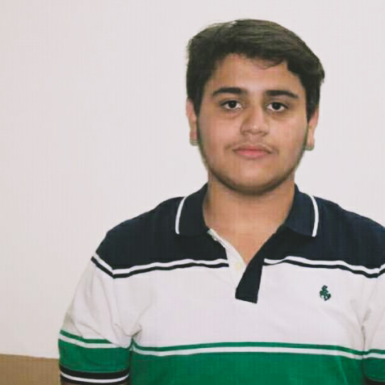

Curriculum Vitae
Muhammad Zain Butt
Phone No. 03073322770
Email: comsatsbscs@gmail.com
Address: Audit and Accounts Society, Lahore,
Punjab, Pakistan.
Area Code: 54000

Career Objective
To be a Software Engineer, by utilizing my theoretical background as a
Computer Scientist and practical experience as a Web Developer. Also to
pursue my interest in the field of Database Management Systems.
Educational Qualifications
-
BSCS from
COMSATS University Islamabad, Lahore Campus
-
FSC(Pre-Engineering) from
Punjab Group of Colleges, Lahore
-
Matric(Computer Science) from
Ali School System, Lahore
Technical Skills
- C
- C++
- Java
- MySql
- HTML
- CSS
- Javascript
- Bootstrap
- React
- React Native
- NPM
Working Experience
- Fresher
- Virtual Internship- Careers in Tech Program, CommonWealth Bank
Certifications
Introduction to Data Science(Specialization) - IBM
Introduction to HTML5- Univeristy of Michigan
Introduction to CSS3- Univeristy of Michigan
Interactivity with JavaScript- University of Michigan
Front-End Web UI Frameworks and Tools: Bootstrap 4- HKUST
Responsive Web Design- University of London
Personal Details
Date of Birth: 31-10-2000
Nationality: Pakistani
Gender: Male
Marital Status: Unmarried
Religion: Islam
Languages: Urdu, English, Punjabi & Arabic